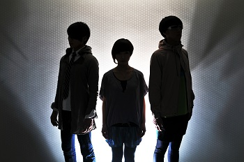

Member
| Vo. | ecco |
| Ba&Track. | ize-mac |
| DJ&Prog. | Gun-Hiroshi |
Profile
アッパーな高揚感の中にメロディアスな切なさを併せ持つダンスエレクトロ、その高い音楽性を圧倒的なロック感で魅せるステージパフォーマンスは、EDMファンのみならず高い評価を得ている。
現在は表記を大文字"NUXX"に変更し、VJ映像と同期させたライブスタイルも提示している。
またクラブシーンにおいてNUXX clubsetとしてのライブも行う等幅広い活動を展開、インディーエレクトロにおいて新進気鋭かつシーンを牽引する存在となっている。
現在は表記を大文字"NUXX"に変更し、VJ映像と同期させたライブスタイルも提示している。
またクラブシーンにおいてNUXX clubsetとしてのライブも行う等幅広い活動を展開、インディーエレクトロにおいて新進気鋭かつシーンを牽引する存在となっている。